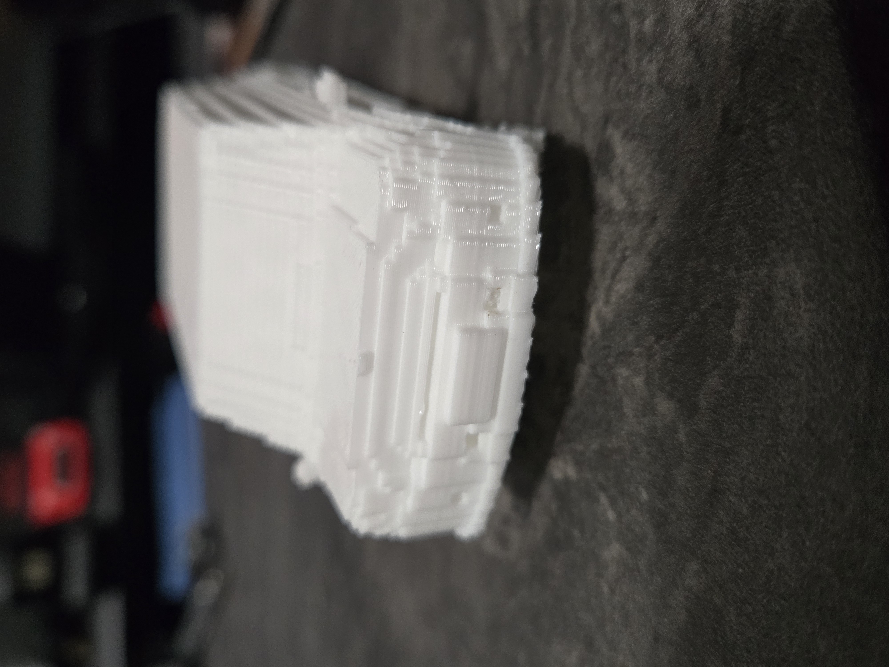
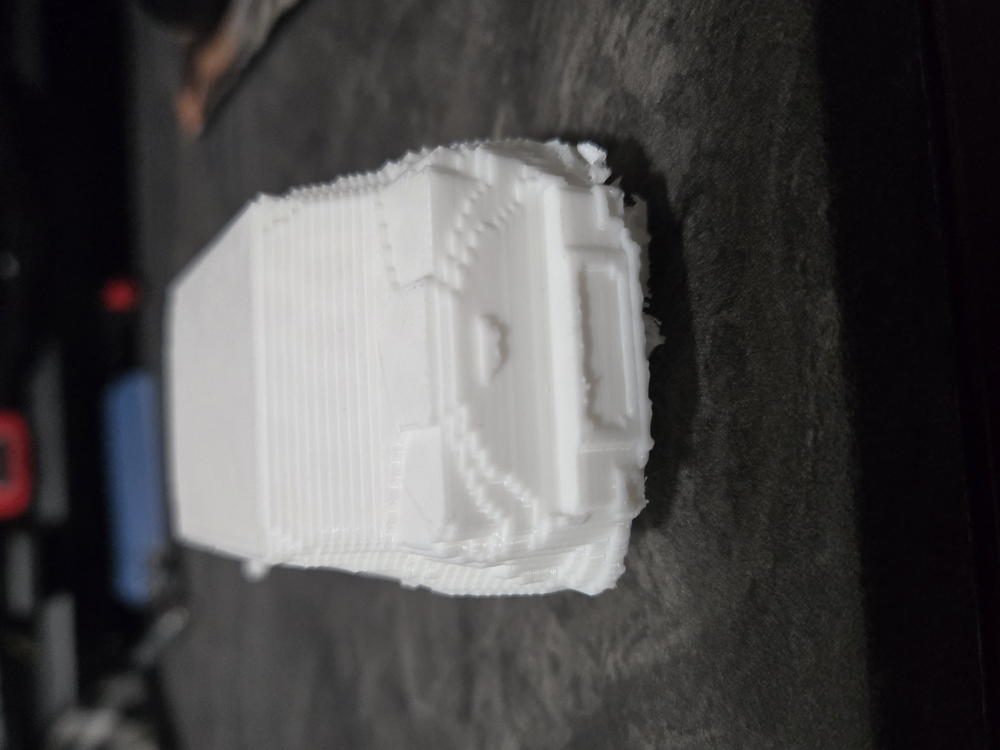
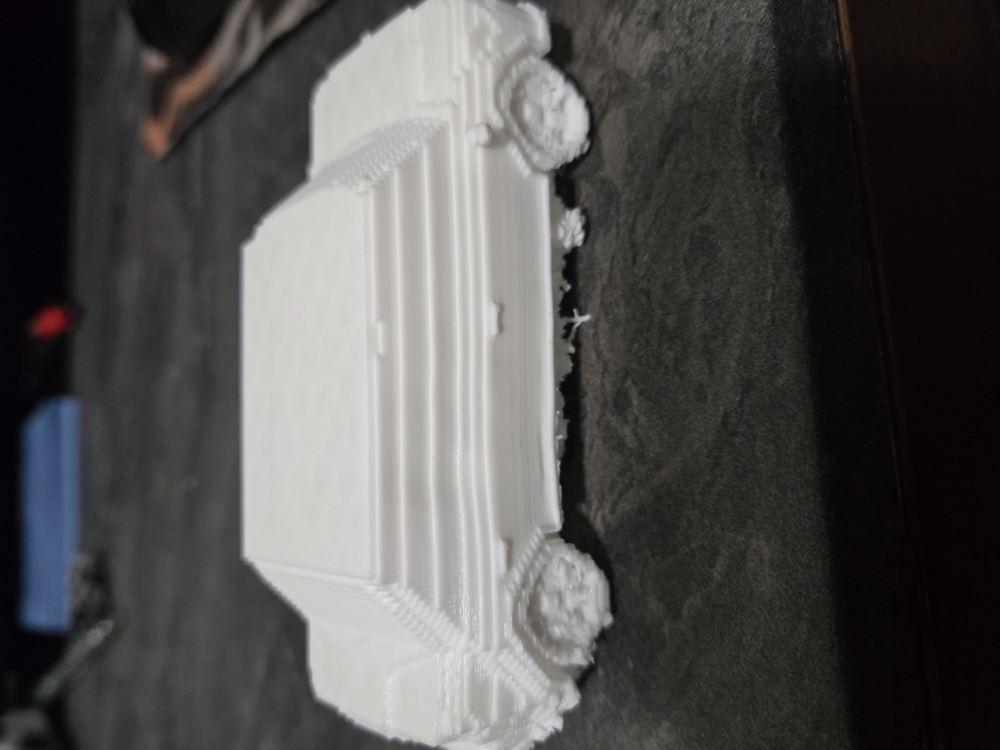

This was a final project that I did for my DMA class. I decided to do it in Minecraft since I ended up having fun with that last time with my Jurassic Park logo. I wanted to build my red 2014 Mini Cooper Countryman that was sadly totaled in May of 2024. This is to commemmorate my first ever car that I owned and the memories that I made with it. I was very sad what happened to it, but I thought might as well have fun recreating it digitally for my final project. I did not have any shortage of struggles and setbacks creating this build. It was a fairly ambitious one due to the size I was going for and it was just difficult to grasp certain building techniques to make the car look more rounded and have its curves rather than looking super blocky. Once I finally got to print it, I had a very tough time removing all of the support material and scaffolding. I used a hair dryer to apply heat to try and soften the material making it easier to pull away and cut with pliers. long story short, at this point in time there is still some support attached to the bottom of the car that is visible in one of the print images. I will be updating this as it is far from complete. After finishing removing all of the support, I will furthermore paint it with acrylics.
  My stl file for if you want to print my mini cooper yourself!